CODING AGENTS AS PIXEL WORLD MODELS
traex/GPT-6.1-Sol · 0050
点击播放 · 原生 RGB 像素
逐轮保存的候选
回放视频、检查图与代码变化。
每份候选均可单独播放。实际图片检查记录在下方工具轨迹中。
候选 01播放与检查图
点击播放 · 原生 RGB 像素
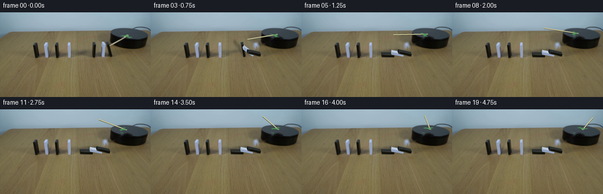
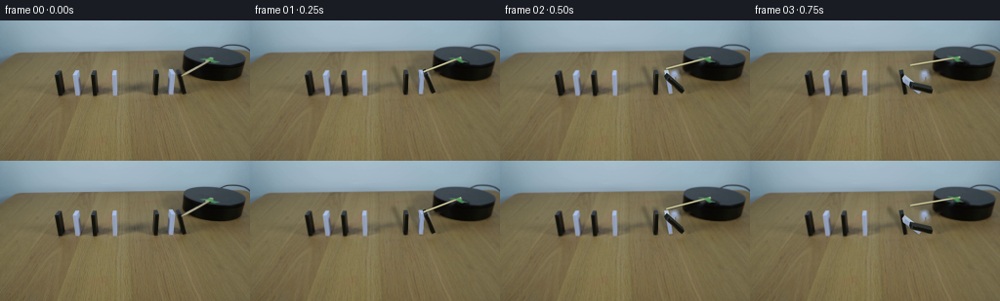
展开代码变化
--- 上一保存版本
+++ 本次保存版本
@@ -0,0 +1,172 @@
+from pathlib import Path
+import math
+import numpy as np
+import cv2
+from PIL import Image, ImageDraw, ImageFilter
+import artifact_io
+
+ROOT=Path(__file__).resolve().parent
+S=4; W,H=256,144
+original=np.array(Image.open(ROOT/'first_frame.png').convert('RGB'))
+rng=np.random.default_rng(125)
+
+def maskpoly(points, blur=0):
+ im=Image.new('L',(W*S,H*S));ImageDraw.Draw(im).polygon([(int(x*S),int(y*S)) for x,y in points],fill=255)
+ if blur:im=im.filter(ImageFilter.GaussianBlur(blur*S))
+ return np.array(im.resize((W,H),Image.Resampling.LANCZOS))
+
+# Remove only the moving pieces; all other pixels come from the photograph.
+remove=np.zeros((H,W),np.uint8)
+for poly in [ [(156,48.5),(162.5,49.2),(164,77.8),(155,78)],[(171,48),(177,49),(179,76.7),(171,78)],[(177.8,48),(184,48.7),(192,76),(184.8,78)],[(184.3,55.8),(216.3,37),(219,39.8),(186.8,58.7)],[(206.5,38),(218.6,36.9),(226,42),(224.5,45.4),(211,43.7)]]:
+ remove=np.maximum(remove,maskpoly(poly))
+remove=(remove>25).astype(np.uint8)*255
+bg=cv2.inpaint(original,remove,4,cv2.INPAINT_TELEA)
+# A quiet strip of the actual tabletop replaces the old cast shadows, not the table itself.
+shadow_area=maskpoly([(133,68),(168,66),(184,68),(192,74),(190,80),(153,79),(133,76)],1.6).astype(float)/255
+# exclude the parts which lie on the circular platform
+shadow_area[:63]=0
+wood=original.copy()
+for y in range(63,82):
+ # Nearby clean wood has the same grain and illumination.
+ wood[y,130:194]=original[y+17,130:194]
+# moderately clean away the standing-domino shadows with locally sampled texture
+bg=(bg*(1-shadow_area[...,None]*.84)+wood*shadow_area[...,None]*.84).astype(np.uint8)
+Image.fromarray(bg).save(ROOT/'.tmp/background.png')
+
+center=np.array([219.5,36.7])
+# Oblique projection of the horizontal turntable plane.
+P=np.array([[1.,0.],[.082,.389]])
+Pinv=np.linalg.inv(P)
+theta0=math.radians(121.0)
+
+# The green fastening is the photographed material, rotated with the arm.
+yy,xx=np.mgrid[:H,:W]
+green_region=(xx>=205)&(xx<=226)&(yy>=36)&(yy<=46)
+r,g,b=original.astype(float).transpose(2,0,1)
+green=((g-r-3)/20).clip(0,1)*((g-b+4)/20).clip(0,1)*green_region
+# feather the edge slightly
+alpha_green=cv2.GaussianBlur(green.astype(np.float32),(3,3),.35)
+
+# Local cuboid models: hinge in table coordinates, thickness, height, projected depth.
+blocks=[dict(x=157.6,y=76.15,T=4.15,h=21.4,d=(-.8,-4.15),a=-1.,start=.61,duration=.47,end=90.,white=False),
+ dict(x=173.1,y=75.55,T=4.1,h=20.6,d=(-.95,-4.05),a=-1.,start=.33,duration=.53,end=79.8,white=True),
+ dict(x=186.1,y=75.15,T=4.2,h=21.9,d=(-1.75,-3.8),a=15.4,start=.075,duration=.61,end=77.5,white=False)]
+
+def angle(o,t):
+ if t<=o['start']:return math.radians(o['a'])
+ u=(t-o['start'])/o['duration']
+ if u<1:
+ # gravity speeds up the fall, collision leaves the piece resting on the next.
+ q=min(1,(.24*u+.76*u*u))
+ return math.radians(o['a']+(o['end']-o['a'])*q)
+ # One imperceptibly small impact recoil, quickly damped.
+ dt=t-o['start']-o['duration']
+ return math.radians(o['end']-.8*math.exp(-dt*15)*math.sin(dt*24))
+
+def verts(o,a):
+ cs,sn=math.cos(a),math.sin(a)
+ v={}
+ for w in (0,1):
+ for d in (0,1):
+ for z in (0,1):
+ v[w,d,z]=np.array([o['x']+w*o['T']*cs-z*o['h']*sn+d*o['d'][0],o['y']-w*o['T']*sn-z*o['h']*cs+d*o['d'][1]])
+ return v
+
+frontkeys=[(0,0,0),(1,0,0),(1,0,1),(0,0,1)]
+# Front textures are taken from the original piece, so their natural tones survive the fall.
+for o in blocks:
+ v=verts(o,math.radians(o['a']))
+ o['src']=np.float32([v[k] for k in frontkeys])
+ o['origmask']=maskpoly([v[k] for k in [(0,1,0),(1,1,0),(1,0,0),(1,0,1),(1,1,1),(0,1,1),(0,0,1)]],.14).astype(float)/255
+
+highbase=np.array(Image.fromarray(bg).resize((W*S,H*S),Image.Resampling.BICUBIC)).astype(float)
+ny,nx=np.mgrid[:H*S,:W*S]
+noise=rng.normal(0,1,(H*S,W*S))
+
+def polygon_layer(points,col,grain=0.9):
+ m=Image.new('L',(W*S,H*S));ImageDraw.Draw(m).polygon([(round(x*S),round(y*S)) for x,y in points],fill=255)
+ a=np.array(m,dtype=float)/255
+ color=np.empty((H*S,W*S,3),float)
+ for k in range(3):color[:,:,k]=col[k]+grain*noise+1.2*(nx/(W*S)-.5)
+ return a,color
+
+def render_block(canvas,o,a,t):
+ v=verts(o,a);sn=max(0,math.sin(a))
+ if o['white']:
+ side=np.array([124,140,164])*(1-sn)+np.array([190,204,222])*sn
+ cap=np.array([188,207,224])*(1-sn)+np.array([159,173,193])*sn
+ front=np.array([156,174,202])
+ else:
+ side=np.array([23,29,30])*(1-sn)+np.array([45,50,49])*sn
+ cap=np.array([48,59,65])*(1-sn)+np.array([20,25,26])*sn
+ front=np.array([16,18,14])
+ faces=[([(0,1,0),(0,0,0),(0,0,1),(0,1,1)],side*.75),
+ ([(1,0,0),(1,1,0),(1,1,1),(1,0,1)],side),
+ ([(0,0,1),(1,0,1),(1,1,1),(0,1,1)],cap),
+ (frontkeys,front)]
+ for keys,col in faces:
+ pts=[v[k] for k in keys]
+ aa,colors=polygon_layer(pts,col)
+ # use the original surface texture on the narrow frontal face
+ if keys==frontkeys:
+ dst=np.float32(pts)*S
+ M=cv2.getPerspectiveTransform(o['src'],dst)
+ warped=cv2.warpPerspective(original,M,(W*S,H*S),flags=cv2.INTER_LINEAR,borderMode=cv2.BORDER_REPLICATE).astype(float)
+ colors=warped
+ canvas[:]=canvas*(1-aa[...,None])+colors*aa[...,None]
+ return canvas
+
+def frame(t):
+ canvas=highbase.copy()
+ # moving soft shadows: project the full solids onto the tabletop with one light.
+ sm=Image.new('L',(W*S,H*S));sd=ImageDraw.Draw(sm)
+ for o in blocks:
+ a=angle(o,t);v=verts(o,a)
+ sh=[]
+ for (w,d,z),p in v.items():
+ elevation=w*o['T']*math.sin(a)+z*o['h']*math.cos(a)
+ sh.append(p+np.array([-.60,-.17])*max(0,elevation))
+ hull=cv2.convexHull(np.float32(sh)).reshape(-1,2)
+ sd.polygon([(round(x*S),round(y*S)) for x,y in hull],fill=55)
+ sa=np.array(sm.filter(ImageFilter.GaussianBlur(1.3*S)),float)/255
+ canvas*=1-sa[...,None]
+ # render the domino chain from the leftmost to the rightmost: the gap prevents propagation.
+ for o in blocks:
+ render_block(canvas,o,angle(o,t),t)
+ # Rod moving in the horizontal plane; a tiny dark lower edge and pale wood highlight.
+ theta=theta0+math.radians(35)*t
+ def pt(radius):return center+P@np.array([radius*math.cos(theta),radius*math.sin(theta)])
+ p0,p1=pt(5.2),pt(65.)
+ rod=Image.new('RGBA',(W*S,H*S),(0,0,0,0));d=ImageDraw.Draw(rod)
+ def line(a,b,fill,width):d.line([tuple(a*S),tuple(b*S)],fill=fill,width=round(width*S))
+ line(p0+[0,.6],p1+[0,.6],(61,56,37,180),1.9)
+ line(p0,p1,(183,178,134,255),1.65)
+ line(p0+[0,-.26],p1+[0,-.26],(211,211,165,255),.66)
+ d.ellipse((p1[0]*S-.72*S,p1[1]*S-.72*S,p1[0]*S+.72*S,p1[1]*S+.72*S),fill=(187,187,144,255))
+ # the wooden arm is above the platform and contacts the first domino at the opening.
+ rr=np.array(rod,float);ra=rr[:,:,3]/255
+ canvas=canvas*(1-ra[...,None])+rr[:,:,:3]*ra[...,None]
+ delta=theta-theta0
+ R=np.array([[math.cos(delta),-math.sin(delta)],[math.sin(delta),math.cos(delta)]])
+ A=P@R@Pinv
+ M=np.column_stack((A,center-A@center))
+ MG=M.copy();MG[:,2]*=S
+ # warp the image at high resolution for subpixel fastening motion.
+ srcimg=np.array(Image.fromarray(original).resize((W*S,H*S),Image.Resampling.BICUBIC))
+ srca=cv2.resize(alpha_green,(W*S,H*S),interpolation=cv2.INTER_LINEAR)
+ tape=cv2.warpAffine(srcimg,MG,(W*S,H*S),flags=cv2.INTER_LINEAR)
+ ta=cv2.warpAffine(srca,MG,(W*S,H*S),flags=cv2.INTER_LINEAR)
+ canvas=canvas*(1-ta[...,None])+tape*ta[...,None]
+ out=Image.fromarray(np.clip(canvas,0,255).astype(np.uint8)).resize((W,H),Image.Resampling.LANCZOS)
+ arr=np.array(out)
+ # Preserve exactly the untouched distant row, room and table.
+ change=np.max(np.abs(arr.astype(float)-bg.astype(float)),axis=2)>0
+ # Photo compositing for dominoes that have not been reached yet.
+ for o in blocks:
+ if t<=o['start']:
+ ma=o['origmask'][...,None]
+ arr=np.clip(arr*(1-ma)+original*ma,0,255).astype(np.uint8)
+ return arr
+
+frames=np.stack([original]+[frame(i/4) for i in range(1,20)])
+artifact_io.save(frames,ROOT)
候选 02播放与检查图
点击播放 · 原生 RGB 像素

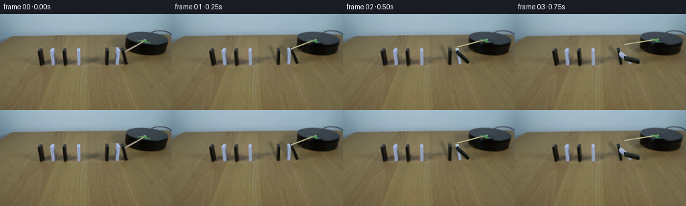
展开代码变化
--- 上一保存版本
+++ 本次保存版本
@@ -17,10 +17,22 @@
# Remove only the moving pieces; all other pixels come from the photograph.
remove=np.zeros((H,W),np.uint8)
-for poly in [ [(156,48.5),(162.5,49.2),(164,77.8),(155,78)],[(171,48),(177,49),(179,76.7),(171,78)],[(177.8,48),(184,48.7),(192,76),(184.8,78)],[(184.3,55.8),(216.3,37),(219,39.8),(186.8,58.7)],[(206.5,38),(218.6,36.9),(226,42),(224.5,45.4),(211,43.7)]]:
+for poly in [ [(156,48.5),(162.5,49.2),(164,77.8),(155,78)],[(169.9,48),(177.8,48),(179.8,54),(179.3,78),(169.9,78)],[(177.8,48),(184,48.7),(192,76),(184.8,78)],[(184.3,55.8),(216.3,37),(219,39.8),(186.8,58.7)],[(205.5,37.4),(219.5,36.5),(227,41),(226,46),(210,44.4)]]:
remove=np.maximum(remove,maskpoly(poly))
remove=(remove>25).astype(np.uint8)*255
bg=cv2.inpaint(original,remove,4,cv2.INPAINT_TELEA)
+# Repair the narrow removed part of the platform from its undisturbed matte surface.
+yg,xg=np.mgrid[:H,:W]
+rim=43.8-0.0047*(xg-220)**2
+surface=(xg>190)&(xg<248)&(yg>29)&(yg<rim-1.3)
+valid=surface&(remove==0)
+X=np.stack([np.ones((H,W)),(xg-220)/30,(yg-36)/8,((xg-220)/30)**2,((yg-36)/8)**2],axis=-1)
+for ch in range(3):
+ coef=np.linalg.lstsq(X[valid],original[:,:,ch][valid],rcond=None)[0]
+ predicted=X@coef
+ target=surface&(remove>0)
+ bg[:,:,ch][target]=np.clip(predicted[target],0,255).astype(np.uint8)
+
# A quiet strip of the actual tabletop replaces the old cast shadows, not the table itself.
shadow_area=maskpoly([(133,68),(168,66),(184,68),(192,74),(190,80),(153,79),(133,76)],1.6).astype(float)/255
# exclude the parts which lie on the circular platform
@@ -157,7 +169,7 @@
tape=cv2.warpAffine(srcimg,MG,(W*S,H*S),flags=cv2.INTER_LINEAR)
ta=cv2.warpAffine(srca,MG,(W*S,H*S),flags=cv2.INTER_LINEAR)
canvas=canvas*(1-ta[...,None])+tape*ta[...,None]
- out=Image.fromarray(np.clip(canvas,0,255).astype(np.uint8)).resize((W,H),Image.Resampling.LANCZOS)
+ out=Image.fromarray(np.clip(canvas,0,255).astype(np.uint8)).filter(ImageFilter.GaussianBlur(.25*S)).resize((W,H),Image.Resampling.LANCZOS)
arr=np.array(out)
# Preserve exactly the untouched distant row, room and table.
change=np.max(np.abs(arr.astype(float)-bg.astype(float)),axis=2)>0
候选 03播放与检查图
点击播放 · 原生 RGB 像素

展开代码变化
--- 上一保存版本
+++ 本次保存版本
@@ -92,6 +92,7 @@
o['origmask']=maskpoly([v[k] for k in [(0,1,0),(1,1,0),(1,0,0),(1,0,1),(1,1,1),(0,1,1),(0,0,1)]],.14).astype(float)/255
highbase=np.array(Image.fromarray(bg).resize((W*S,H*S),Image.Resampling.BICUBIC)).astype(float)
+baseline=np.array(Image.fromarray(np.clip(highbase,0,255).astype(np.uint8)).filter(ImageFilter.GaussianBlur(.25*S)).resize((W,H),Image.Resampling.LANCZOS)).astype(float)
ny,nx=np.mgrid[:H*S,:W*S]
noise=rng.normal(0,1,(H*S,W*S))
@@ -170,7 +171,7 @@
ta=cv2.warpAffine(srca,MG,(W*S,H*S),flags=cv2.INTER_LINEAR)
canvas=canvas*(1-ta[...,None])+tape*ta[...,None]
out=Image.fromarray(np.clip(canvas,0,255).astype(np.uint8)).filter(ImageFilter.GaussianBlur(.25*S)).resize((W,H),Image.Resampling.LANCZOS)
- arr=np.array(out)
+ arr=np.clip(bg.astype(float)+np.array(out).astype(float)-baseline,0,255).astype(np.uint8)
# Preserve exactly the untouched distant row, room and table.
change=np.max(np.abs(arr.astype(float)-bg.astype(float)),axis=2)>0
# Photo compositing for dominoes that have not been reached yet.
候选 04播放与检查图
可观测工具轨迹
实际执行的命令与返回图片。
命令 1exit 0
/bin/bash -lc "ls -la && cat prompt.txt && printf '\\n---RULES---\\n' && cat GENERATION_RULES.md"
命令 2exit 0
/bin/bash -lc "cat artifact_io.py && python - <<'PY'
from PIL import Image
im=Image.open('first_frame.png');print(im.size); im.resize((1024,576)).save('.tmp/enlarged.png')
PY"命令 3exit 0
/bin/bash -lc "python - <<'PY'
import importlib.util
for m in ['cv2','scipy','numpy','PIL']:
print(m, bool(importlib.util.find_spec(m)))
from PIL import Image
im=Image.open('first_frame.png');im.crop((140,20,256,90)).resize((928,560)).save('.tmp/right.png')
PY"命令 4exit 0
/bin/bash -lc "python - <<'PY'
from PIL import Image,ImageDraw
im=Image.open('first_frame.png').resize((1536,864));d=ImageDraw.Draw(im)
for x in range(0,256,5):
d.line((x*6,0,x*6,864),fill=(255,0,0,100),width=1); d.text((x*6,460),str(x),fill='yellow')
for y in range(25,85,5):
d.line((0,y*6,1536,y*6),fill=(255,0,0),width=1);d.text((1390,y*6),str(y),fill='yellow')
im.crop((850,120,1536,520)).save('.tmp/grid.png')
PY"命令 5exit 0
/bin/bash -lc "python - <<'PY'
from PIL import Image
im=Image.open('first_frame.png');im.crop((151,46,193,81)).resize((840,700),Image.Resampling.NEAREST).save('.tmp/dom.png')
PY"命令 6exit 0
/bin/bash -lc "python - <<'PY'
from PIL import Image
im=Image.open('first_frame.png');im.crop((180,25,252,65)).resize((1008,560)).save('.tmp/plate.png')
PY"命令 7exit 0
/bin/bash -lc "cat > generate.py <<'PY'
from pathlib import Path
import math
import numpy as np
import cv2
from PIL import Image, ImageDraw, ImageFilter
import artifact_io
ROOT=Path(__file__).resolve().parent
S=4; W,H=256,144
original=np.array(Image.open(ROOT/'first_frame.png').convert('RGB'))
rng=np.random.default_rng(125)
def maskpoly(points, blur=0):
im=Image.new('L',(W*S,H*S));ImageDraw.Draw(im).polygon([(int(x*S),int(y*S)) for x,y in points],fill=255)
if blur:im=im.filter(ImageFilter.GaussianBlur(blur*S))
return np.array(im.resize((W,H),Image.Resampling.LANCZOS))
# Remove only the moving pieces; all other pixels come from the photograph.
remove=np.zeros((H,W),np.uint8)
for poly in [ [(156,48.5),(162.5,49.2),(164,77.8),(155,78)],[(171,48),(177,49),(179,76.7),(171,78)],[(177.8,48),(184,48.7),(192,76),(184.8,78)],[(184.3,55.8),(216.3,37),(219,39.8),(186.8,58.7)],[(206.5,38),(218.6,36.9),(226,42),(224.5,45.4),(211,43.7)]]:
remove=np.maximum(remove,maskpoly(poly))
remove=(remove>25).astype(np.uint8)*255
bg=cv2.inpaint(original,remove,4,cv2.INPAINT_TELEA)
# A quiet strip of the actual tabletop replaces the old cast shadows, not the table itself.
shadow_area=maskpoly([(133,68),(168,66),(184,68),(192,74),(190,80),(153,79),(133,76)],1.6).astype(float)/255
# exclude the parts which lie on the circular platform
shadow_area[:63]=0
wood=original.copy()
for y in range(63,82):
# Nearby clean wood has the same grain and illumination.
wood[y,130:194]=original[y+17,130:194]
# moderately clean away the standing-domino shadows with locally sampled texture
bg=(bg*(1-shadow_area[...,None]*.84)+wood*shadow_area[...,None]*.84).astype(np.uint8)
Image.fromarray(bg).save(ROOT/'.tmp/background.png')
center=np.array([219.5,36.7])
# Oblique projection of the horizontal turntable plane.
P=np.array([[1.,0.],[.082,.389]])
Pinv=np.linalg.inv(P)
theta0=math.radians(121.0)
# The green fastening is the photographed material, rotated with the arm.
yy,xx=np.mgrid[:H,:W]
green_region=(xx>=205)&(xx<=226)&(yy>=36)&(yy<=46)
r,g,b=original.astype(float).transpose(2,0,1)
green=((g-r-3)/20).clip(0,1)*((g-b+4)/20).clip(0,1)*green_region
# feather the edge slightly
alpha_green=cv2.GaussianBlur(green.astype(np.float32),(3,3),.35)
# Local cuboid models: hinge in table coordinates, thickness, height, projected depth.
blocks=[dict(x=157.6,y=76.15,T=4.15,h=21.4,d=(-.8,-4.15),a=-1.,start=.61,duration=.47,end=90.,white=False),
dict(x=173.1,y=75.55,T=4.1,h=20.6,d=(-.95,-4.05),a=-1.,start=.33,duration=.53,end=79.8,white=True),
dict(x=186.1,y=75.15,T=4.2,h=21.9,d=(-1.75,-3.8),a=15.4,start=.075,duration=.61,end=77.5,white=False)]
def angle(o,t):
if t<=o['start']:return math.radians(o['a'])
u=(t-o['start'])/o['duration']
if u<1:
# gravity speeds up the fall, collision leaves the piece resting on the next.
q=min(1,(.24*u+.76*u*u))
return math.radians(o['a']+(o['end']-o['a'])*q)
# One imperceptibly small impact recoil, quickly damped.
dt=t-o['start']-o['duration']
return math.radians(o['end']-.8*math.exp(-dt*15)*math.sin(dt*24))
def verts(o,a):
cs,sn=math.cos(a),math.sin(a)
v={}
for w in (0,1):
for d in (0,1):
for z in (0,1):
v[w,d,z]=np.array([o['x']+w*o['T']*cs-z*o['h']*sn+d*o['d'][0],o['y']-w*o['T']*sn-z*o['h']*cs+d*o['d'][1]])
return v
frontkeys=[(0,0,0),(1,0,0),(1,0,1),(0,0,1)]
# Front textures are taken from the original piece, so their natural tones survive the fall.
for o in blocks:
v=verts(o,math.radians(o['a']))
o['src']=np.float32([v[k] for k in frontkeys])
o['origmask']=maskpoly([v[k] for k in [(0,1,0),(1,1,0),(1,0,0),(1,0,1),(1,1,1),(0,1,1),(0,0,1)]],.14).astype(float)/255
highbase=np.array(Image.fromarray(bg).resize((W*S,H*S),Image.Resampling.BICUBIC)).astype(float)
ny,nx=np.mgrid[:H*S,:W*S]
noise=rng.normal(0,1,(H*S,W*S))
def polygon_layer(points,col,grain=0.9):
m=Image.new('L',(W*S,H*S));ImageDraw.Draw(m).polygon([(round(x*S),round(y*S)) for x,y in points],fill=255)
a=np.array(m,dtype=float)/255
color=np.empty((H*S,W*S,3),float)
for k in range(3):color[:,:,k]=col[k]+grain*noise+1.2*(nx/(W*S)-.5)
return a,color
def render_block(canvas,o,a,t):
v=verts(o,a);sn=max(0,math.sin(a))
if o['white']:
side=np.array([124,140,164])*(1-sn)+np.array([190,204,222])*sn
cap=np.array([188,207,224])*(1-sn)+np.array([159,173,193])*sn
front=np.array([156,174,202])
else:
side=np.array([23,29,30])*(1-sn)+np.array([45,50,49])*sn
cap=np.array([48,59,65])*(1-sn)+np.array([20,25,26])*sn
front=np.array([16,18,14])
faces=[([(0,1,0),(0,0,0),(0,0,1),(0,1,1)],side*.75),
([(1,0,0),(1,1,0),(1,1,1),(1,0,1)],side),
([(0,0,1),(1,0,1),(1,1,1),(0,1,1)],cap),
(frontkeys,front)]
for keys,col in faces:
pts=[v[k] for k in keys]
aa,colors=polygon_layer(pts,col)
# use the original surface texture on the narrow frontal face
if keys==frontkeys:
dst=np.float32(pts)*S
M=cv2.getPerspectiveTransform(o['src'],dst)
warped=cv2.warpPerspective(original,M,(W*S,H*S),flags=cv2.INTER_LINEAR,borderMode=cv2.BORDER_REPLICATE).astype(float)
colors=warped
canvas[:]=canvas*(1-aa[...,None])+colors*aa[...,None]
return canvas
def frame(t):
canvas=highbase.copy()
# moving soft shadows: project the full solids onto the tabletop with one light.
sm=Image.new('L',(W*S,H*S));sd=ImageDraw.Draw(sm)
for o in blocks:
a=angle(o,t);v=verts(o,a)
sh=[]
for (w,d,z),p in v.items():
elevation=w*o['T']*math.sin(a)+z*o['h']*math.cos(a)
sh.append(p+np.array([-.60,-.17])*max(0,elevation))
hull=cv2.convexHull(np.float32(sh)).reshape(-1,2)
sd.polygon([(round(x*S),round(y*S)) for x,y in hull],fill=55)
sa=np.array(sm.filter(ImageFilter.GaussianBlur(1.3*S)),float)/255
canvas*=1-sa[...,None]
# render the domino chain from the leftmost to the rightmost: the gap prevents propagation.
for o in blocks:
render_block(canvas,o,angle(o,t),t)
# Rod moving in the horizontal plane; a tiny dark lower edge and pale wood highlight.
theta=theta0+math.radians(35)*t
def pt(radius):return center+P@np.array([radius*math.cos(theta),radius*math.sin(theta)])
p0,p1=pt(5.2),pt(65.)
rod=Image.new('RGBA',(W*S,H*S),(0,0,0,0));d=ImageDraw.Draw(rod)
def line(a,b,fill,width):d.line([tuple(a*S),tuple(b*S)],fill=fill,width=round(width*S))
line(p0+[0,.6],p1+[0,.6],(61,56,37,180),1.9)
line(p0,p1,(183,178,134,255),1.65)
line(p0+[0,-.26],p1+[0,-.26],(211,211,165,255),.66)
d.ellipse((p1[0]*S-.72*S,p1[1]*S-.72*S,p1[0]*S+.72*S,p1[1]*S+.72*S),fill=(187,187,144,255))
# the wooden arm is above the platform and contacts the first domino at the opening.
rr=np.array(rod,float);ra=rr[:,:,3]/255
canvas=canvas*(1-ra[...,None])+rr[:,:,:3]*ra[...,None]
delta=theta-theta0
R=np.array([[math.cos(delta),-math.sin(delta)],[math.sin(delta),math.cos(delta)]])
A=P@R@Pinv
M=np.column_stack((A,center-A@center))
MG=M.copy();MG[:,2]*=S
# warp the image at high resolution for subpixel fastening motion.
srcimg=np.array(Image.fromarray(original).resize((W*S,H*S),Image.Resampling.BICUBIC))
srca=cv2.resize(alpha_green,(W*S,H*S),interpolation=cv2.INTER_LINEAR)
tape=cv2.warpAffine(srcimg,MG,(W*S,H*S),flags=cv2.INTER_LINEAR)
ta=cv2.warpAffine(srca,MG,(W*S,H*S),flags=cv2.INTER_LINEAR)
canvas=canvas*(1-ta[...,None])+tape*ta[...,None]
out=Image.fromarray(np.clip(canvas,0,255).astype(np.uint8)).resize((W,H),Image.Resampling.LANCZOS)
arr=np.array(out)
# Preserve exactly the untouched distant row, room and table.
change=np.max(np.abs(arr.astype(float)-bg.astype(float)),axis=2)>0
# Photo compositing for dominoes that have not been reached yet.
for o in blocks:
if t<=o['start']:
ma=o['origmask'][...,None]
arr=np.clip(arr*(1-ma)+original*ma,0,255).astype(np.uint8)
return arr
frames=np.stack([original]+[frame(i/4) for i in range(1,20)])
artifact_io.save(frames,ROOT)
PY
python generate.py"命令 8exit 0
/bin/bash -lc "python - <<'PY'
from PIL import Image
im=Image.open('frames/04.png');im.resize((1024,576)).save('.tmp/f4.png')
PY"命令 9exit 0
/bin/bash -lc "python - <<'PY'
p='generate.py'
s=open(p).read().replace(\"[(171,48),(177,49),(179,76.7),(171,78)]\",\"[(169.9,48),(177.8,48),(179.8,54),(179.3,78),(169.9,78)]\")
s=s.replace(\"[(206.5,38),(218.6,36.9),(226,42),(224.5,45.4),(211,43.7)]\",\"[(205.5,37.4),(219.5,36.5),(227,41),(226,46),(210,44.4)]\")
s=s.replace(\"bg=cv2.inpaint(original,remove,4,cv2.INPAINT_TELEA)\",\"\"\"bg=cv2.inpaint(original,remove,4,cv2.INPAINT_TELEA)
# Repair the narrow removed part of the platform from its undisturbed matte surface.
yg,xg=np.mgrid[:H,:W]
rim=43.8-0.0047*(xg-220)**2
surface=(xg>190)&(xg<248)&(yg>29)&(yg<rim-1.3)
valid=surface&(remove==0)
X=np.stack([np.ones((H,W)),(xg-220)/30,(yg-36)/8,((xg-220)/30)**2,((yg-36)/8)**2],axis=-1)
for ch in range(3):
coef=np.linalg.lstsq(X[valid],original[:,:,ch][valid],rcond=None)[0]
predicted=X@coef
target=surface&(remove>0)
bg[:,:,ch][target]=np.clip(predicted[target],0,255).astype(np.uint8)
\"\"\")
# subtle photographic blur on moving pieces, no effect on preserved room or table
s=s.replace(\"out=Image.fromarray(np.clip(canvas,0,255).astype(np.uint8)).resize((W,H),Image.Resampling.LANCZOS)\",\"out=Image.fromarray(np.clip(canvas,0,255).astype(np.uint8)).filter(ImageFilter.GaussianBlur(.25*S)).resize((W,H),Image.Resampling.LANCZOS)\")
open(p,'w').write(s)
PY
python generate.py"命令 10exit 0
/bin/bash -lc "python - <<'PY'
p='generate.py';s=open(p).read();s=s.replace(\"ny,nx=np.mgrid[:H*S,:W*S]\",\"baseline=np.array(Image.fromarray(np.clip(highbase,0,255).astype(np.uint8)).filter(ImageFilter.GaussianBlur(.25*S)).resize((W,H),Image.Resampling.LANCZOS)).astype(float)\\nny,nx=np.mgrid[:H*S,:W*S]\")
s=s.replace(\"arr=np.array(out)\\n # Preserve\", \"arr=np.clip(bg.astype(float)+np.array(out).astype(float)-baseline,0,255).astype(np.uint8)\\n # Preserve\")
open(p,'w').write(s)
PY
python generate.py
python - <<'PY'
import numpy as np
from PIL import Image
p=np.load('pixels.npz')['pixels'];print('pixels:',p.shape,p.dtype)
a=np.array(Image.open('frames/00.png')); b=np.array(Image.open('first_frame.png'));assert np.array_equal(a,b)
for i in [1,4,19]:
c=np.array(Image.open('frames/%02d.png'%i));print(i,'unchanged outside setup',np.array_equal(c[85:],b[85:]))
PY
command -v ffmpeg || true"视觉工具实际返回图片 1
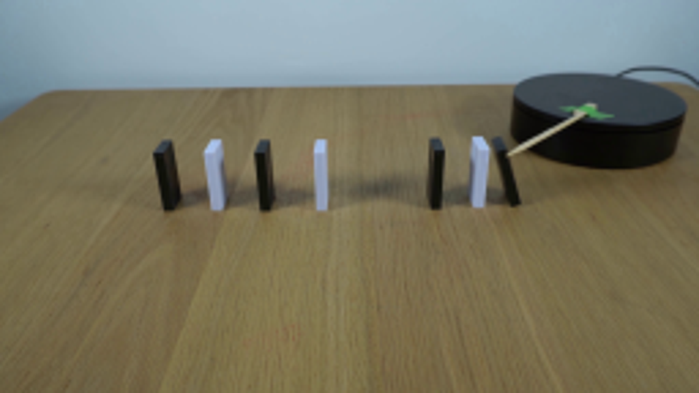
视觉工具实际返回图片 2
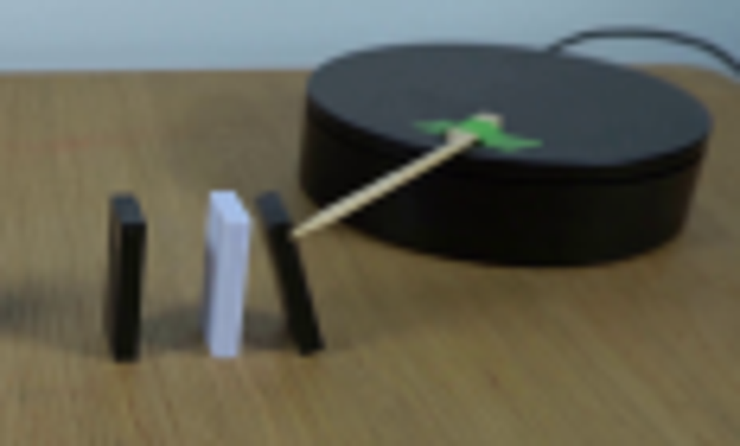
视觉工具实际返回图片 3
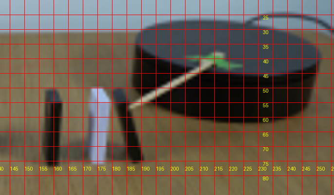
视觉工具实际返回图片 4
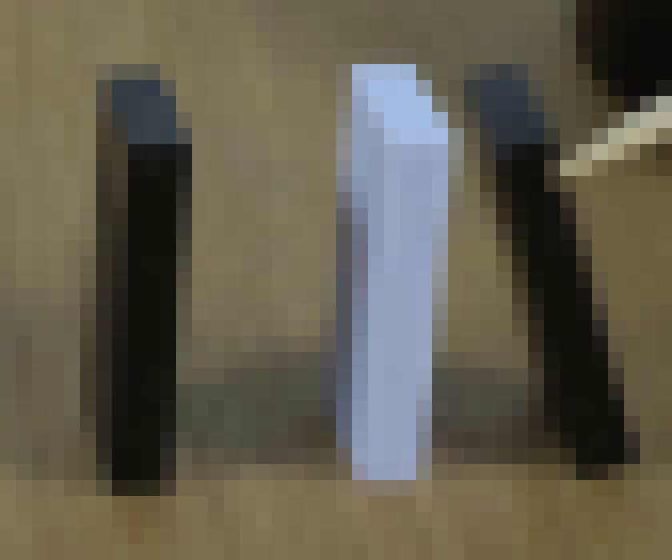
视觉工具实际返回图片 5
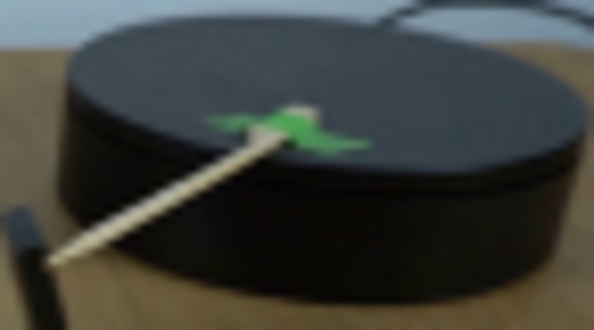
视觉工具实际返回图片 6

视觉工具实际返回图片 7
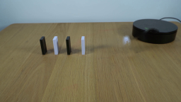
视觉工具实际返回图片 8
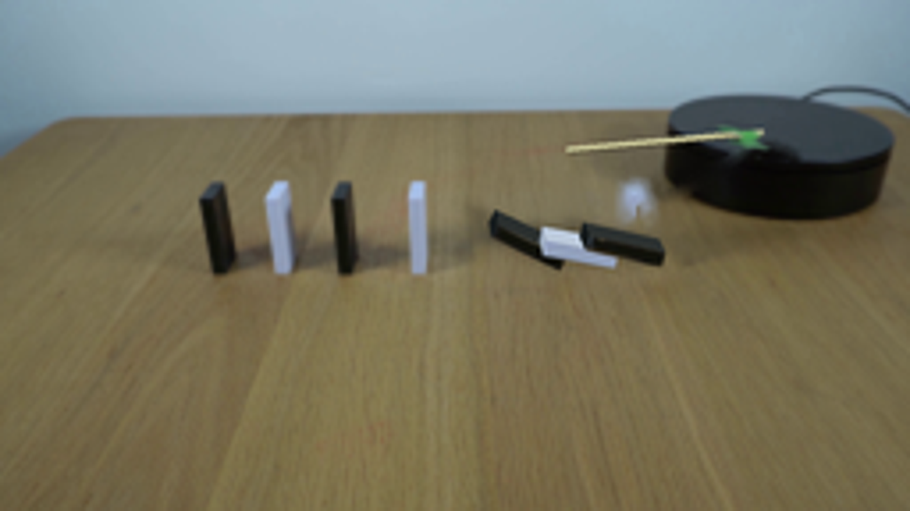
视觉工具实际返回图片 9

视觉工具实际返回图片 10
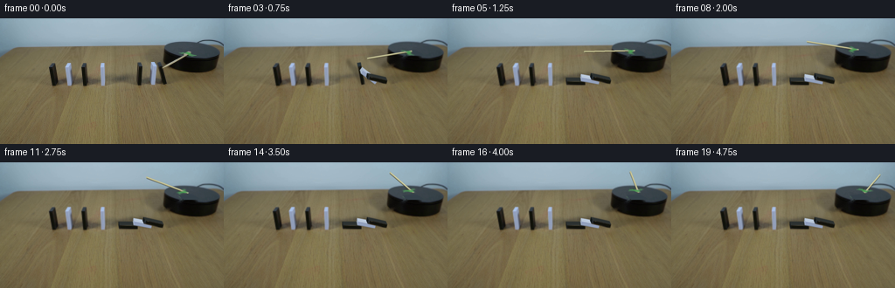
保存候选 4 份；完成命令 10 次；可验证图片返回 10 张。原始 API 响应与完整日志保留在本地。